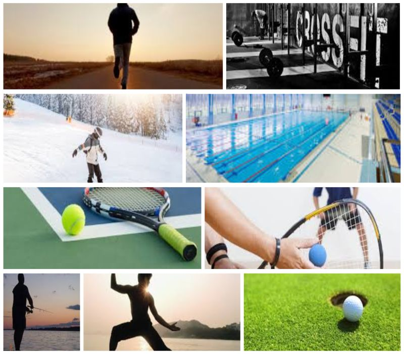
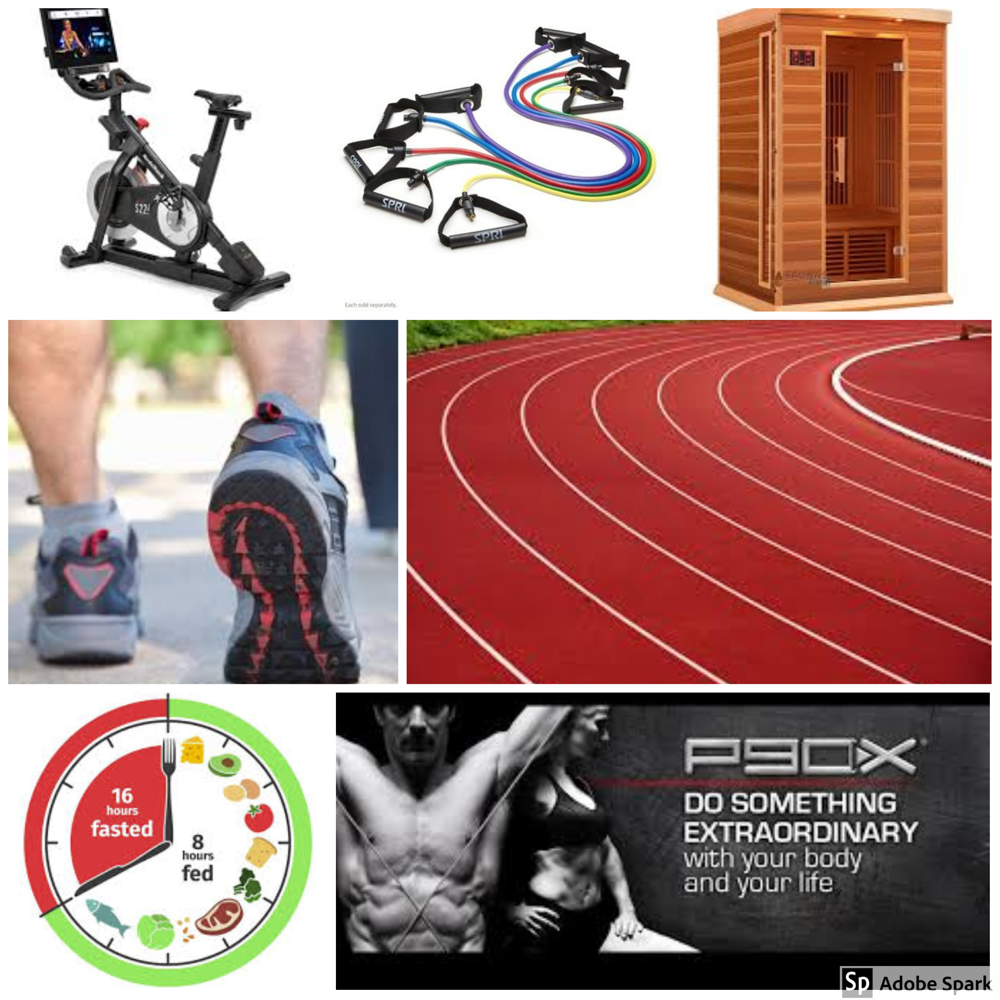

Growing up on a lake I was swimming before I was walking. I went to college on a swimming scholarship and was one of the nations best in my senior year. In my 20’s I snowboarded, golfed, and earned a black belt in martial arts. In my 30’s I took up racquetball and was sponsored by Wilson and e-Force. In my 40’s I got my first hole-in one, met the love of my life and my career really took off.
I was 54 when the Covid-19 pandemic hit and put on a lot of weight. In July of 2020 I started formulating a plan to get back in shape and created this web site to track and share my progress.

At 54 I don’t expect to get the body I had at 24, but I would like to reduce my overall body fat from 30% down to 20% and reduce my weight from 210 to 175. To do this I’m going to incorporate various flavors of intermittent fasting to get my body into Ketosis which is a metabolic state in which your body uses its own fat and ketones rather than glucose (sugar) as its main fuel source. Translated this means that when you are in a fasting state and reach Ketosis, your body begins to use your stored body fat as energy.
I’m also going to utilize my Peloton, Infrared Sauna, exercise bands, and workouts from both P90X and Faster Way to Fat Loss along with walking, running, eliminating alcohol, and drinking half my body weight in ounces of water each day.